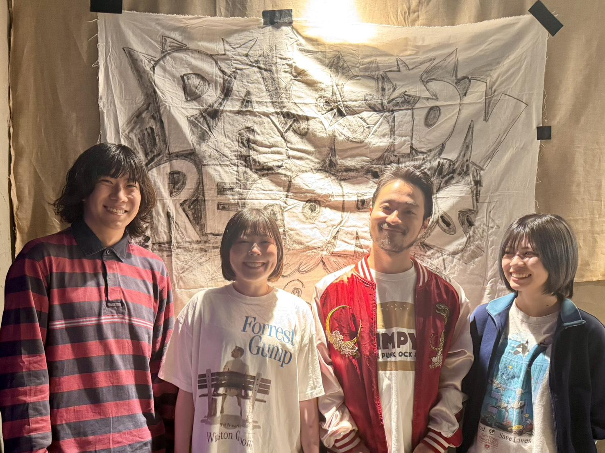

八王子にて初ライブ。ギターのなおおにとうへいの20歳の誕生日でもあった。
この日から 1st demo と 2nd demo を同時発売！

ピーナッズ
2018年ごろ「神戸のPiggiesか八王子のPeace of Breadみたいなバンドをやろう」と結成。
当初志したバンドには似ていないものの、
非常にキャッチーでありながらラモーンパンクやサーフポップパンク、
UK・USメロディック、ヨーロッパ母国語パンクの影響を
色濃く感じさせる楽曲を連発するスタイルがマニアにバカウケ、
一躍アンダーグラウンドポップパンクシーンの星となる可能性もある
4人組男女混声母国語ポップパンクバンドである。
八王子にて初ライブ。ギターのなおおにとうへいの20歳の誕生日でもあった。
この日から 1st demo と 2nd demo を同時発売！
1st mini album「ハッピーセット」を発売。
知識がなさ過ぎてリリースパーティとかはやってない…
無観客配信ライブ「ピ」を新宿 Marble にて開催。
コロナ禍でやれることはやった。YouTubeで今も見れます！
7inch record「60DAYS / 春があたたかいのは」を発売。
同日、リリースパーティを調布Crossにて開催！
2nd mini album「ピー夏」を発売。
全国各地いろんなところにリリースツアーで行った。好きな街や人が増えまくった！
自主企画「Smörgås bord vol.1」を中野 MOON STEP にて開催。
14バンド招いて2ステージ企画！ツアーファイナル的なやつでした！
HOGO地球と共催で「集合演奏解散」を高円寺DOMにて開催。
みんなでお酒やフードを売ったり楽しかった！HOGO地球のだらりが急病で出れなかったのでリベンジしたい。
forsibylと共催で「なまらてやんDAY」を新宿Marbleにて開催。
ギターのトミーがインフルで急遽アコースティックでの出演に…これもまたリベンジしたい。
初期メンバーであるドラマーのりっちゃんが脱退。
新たなドラマーを迎えて活動中！